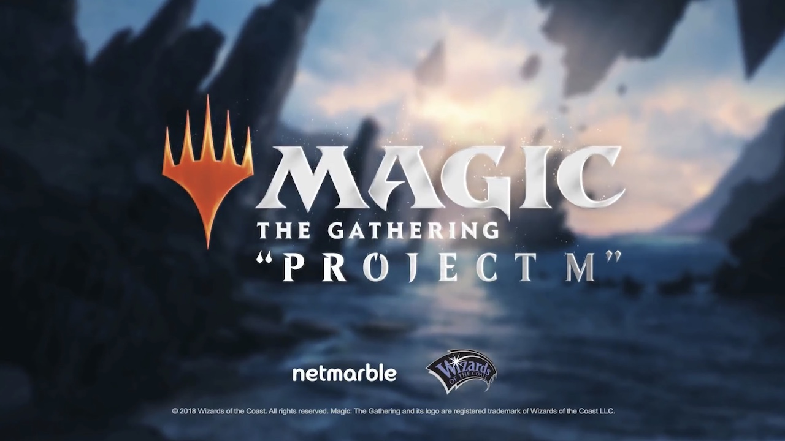
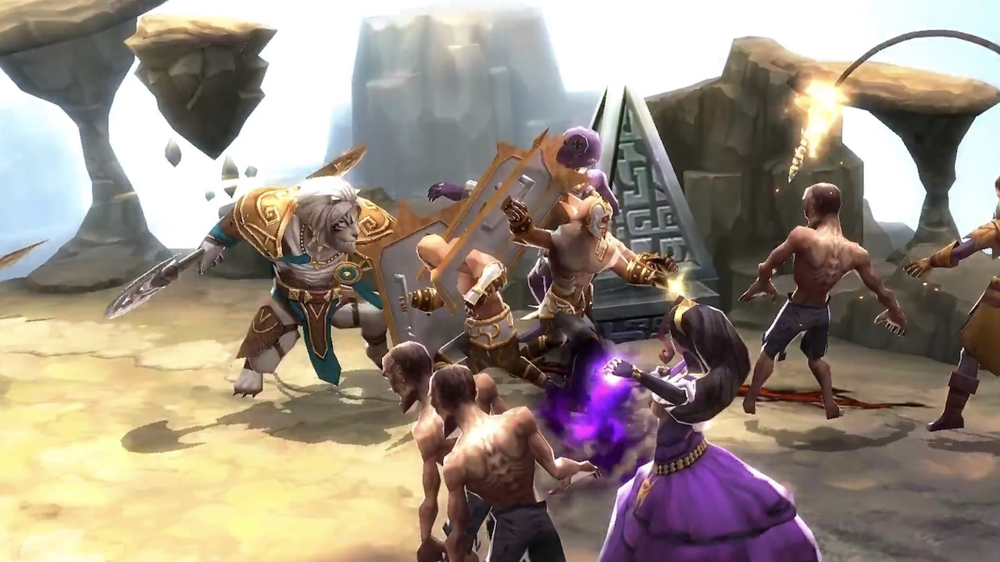

9 lutego 2018
Wszystko wskazuje na to, że Wizards of the Coast zamierzają z przytupem obchodzić 25-lecie swojej najpopularniejszej karcianki. Poza specjalnym dodatkiem Masters 25, zawierającym karty z całej historii Medżika (także z tych najpierwszych edycji, czyli Alpha i Beta), oraz nowej odsłonie elektronicznej wersji gry - Magic: the Gathering Arena, w tym tygodniu ujawniono zupełnie nowy projekt, chwilowo kryjący się pod tajemniczym kryptonimem "Project M".

Będzie to gra typu MOBA na tablety i smartfony, która powstaje we współpracy z Netmarble, a więc firmą mającą spore doświadczenie w tworzeniu gier na urządzenia przenośne, w której portfolio znajdują się takie tytuły jak: "Star Wars: Force Arena", "MARVEL: Future Fight", czy "Lineage 2: Revolution".
Póki co zbyt wielu szczegółów nie ujawniono, ale na opublikowanym na YouTubie teaserze widać, że będziemy mogli dowodzić Lilianą, Chandrą i Ajanim, których zadaniem będzie zdobycie bazy przeciwnika korzystając z dobrze znanych medżikowych czarów i stworów. Inne kolory magii zapewne też dostaną swoich bohaterów - Jace'a oraz Garruka lub Nissę.

Czy potrzebna nam kolejna mobilna MOBA? Wszystko okaże się w bliżej nieokreślonym terminie w tym roku. Osobiście jednak wolałbym zobaczyć elektroniczną wersję karcianki z prawdziwego zdarzenia, bo wydaje się, że Wizardsi trochę przysnęli i Hearthstone od Blizzarda zupełnie zdominował rynek. Cała nadzieja w MtG: Arena, która oficjalnie zadebiutować ma również w 2018 roku, co prawda wyłącznie na PC. Jednak fakt, że powstaje na silniku Unity, pozwala liczyć na konwersję na urządzenia mobilne w niedalekiej przyszłości.